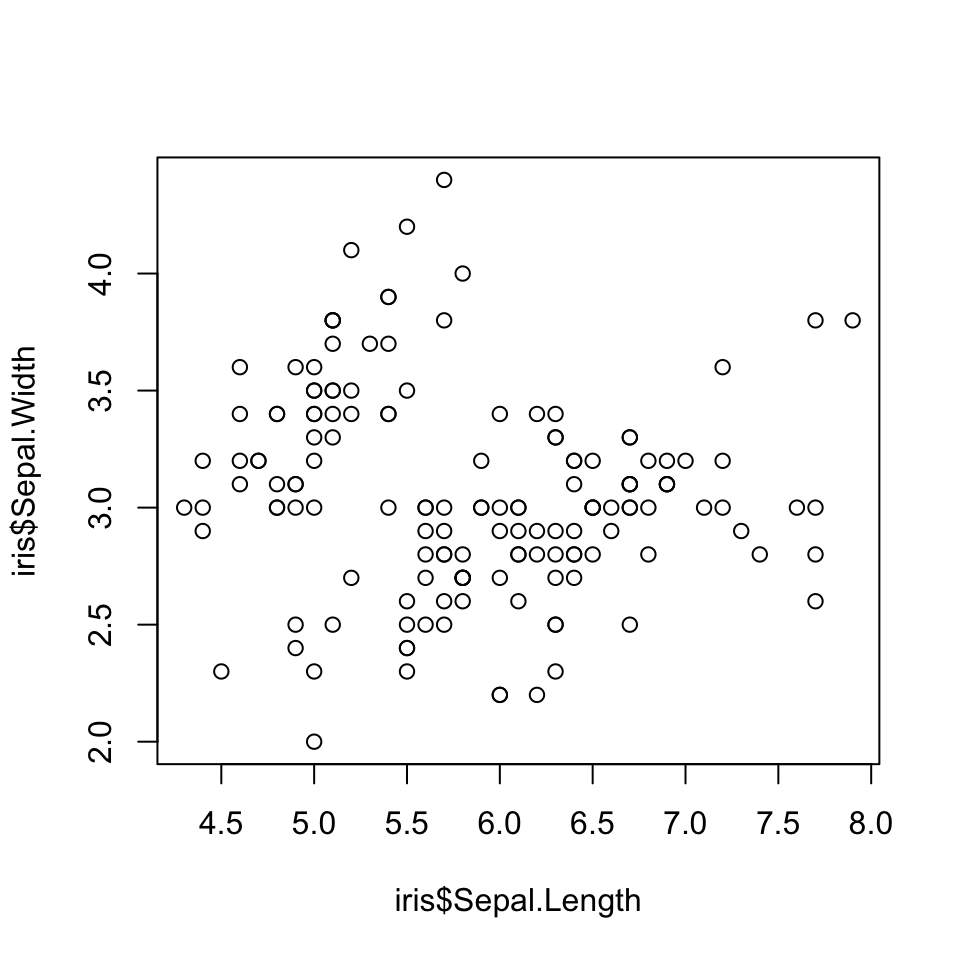
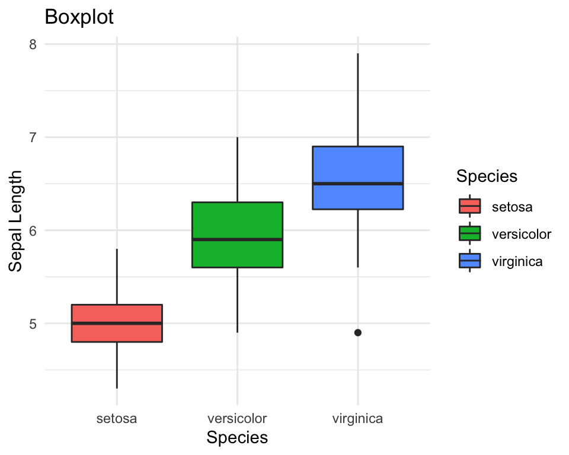
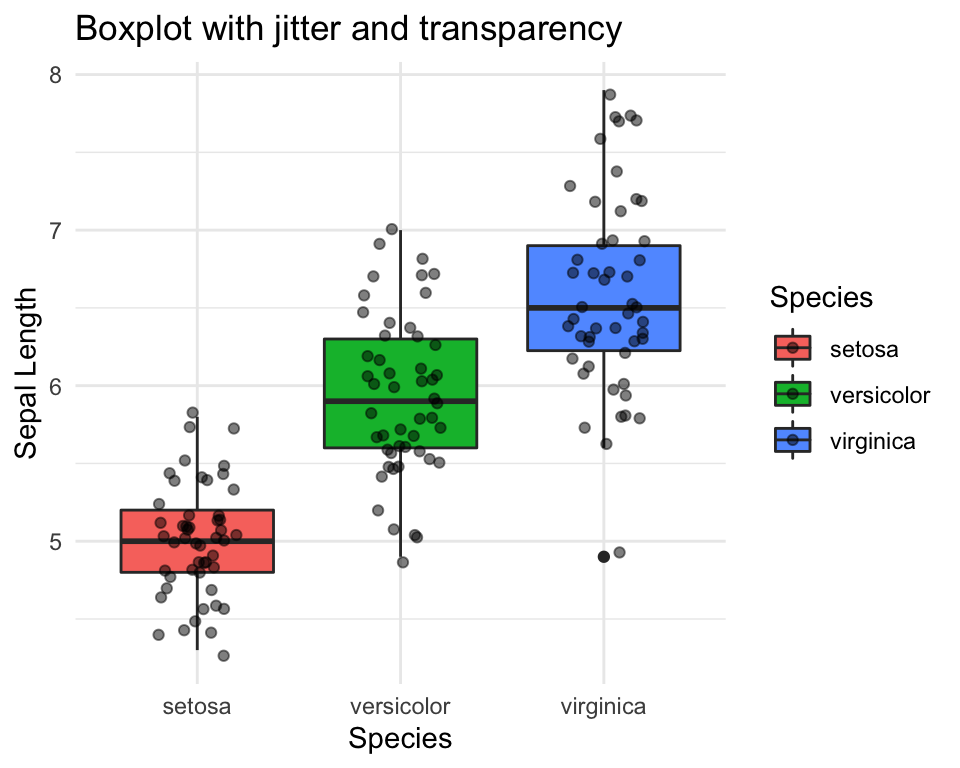
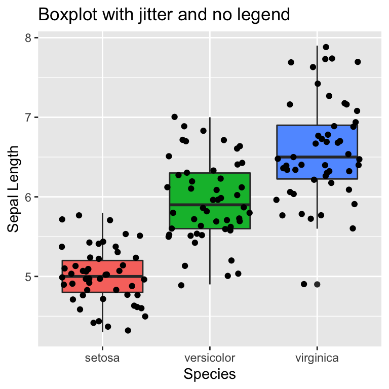
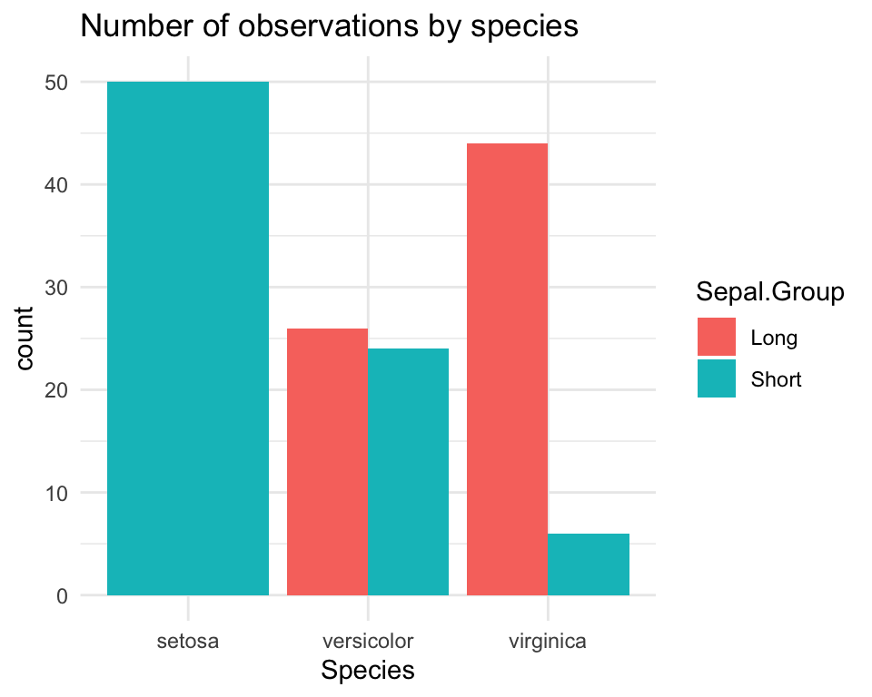
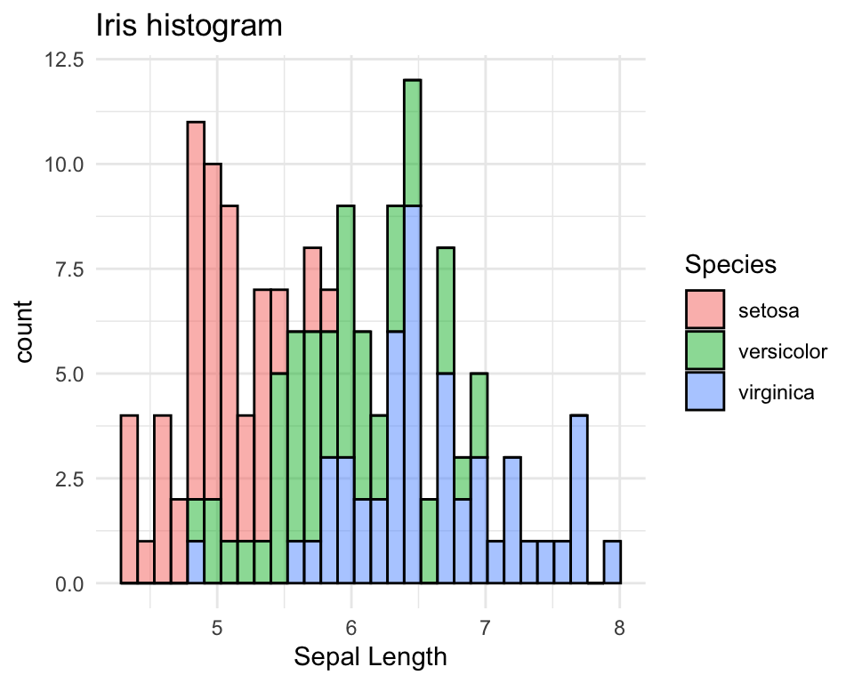
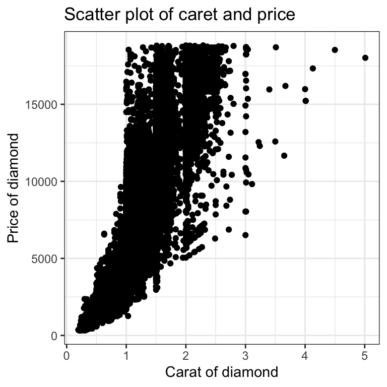
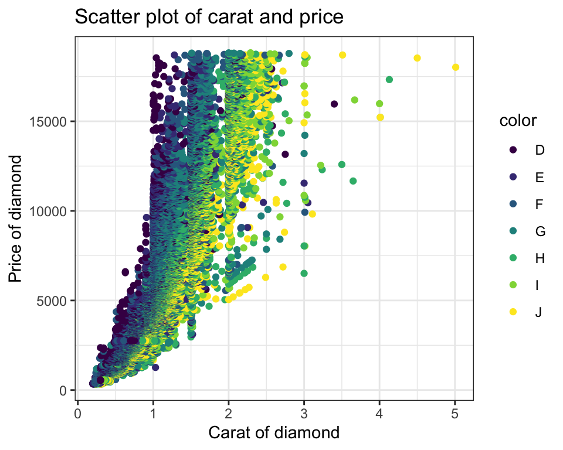
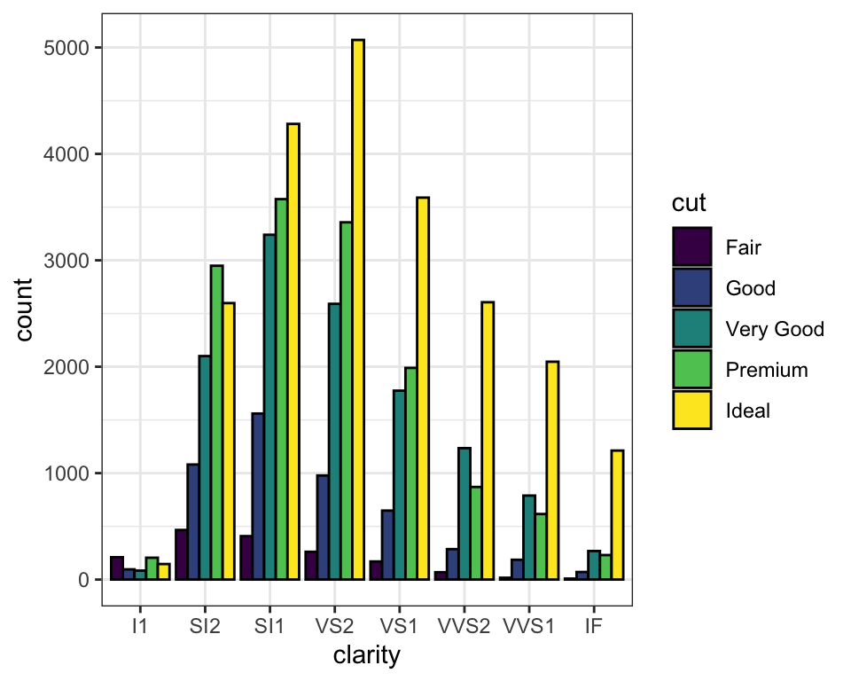
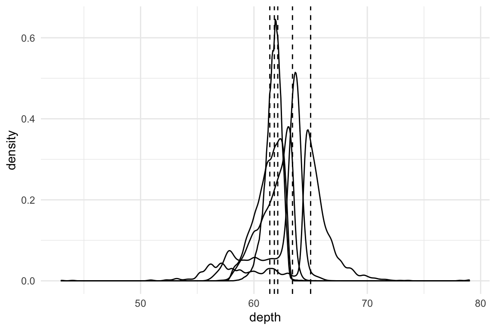

Chapter 3 Visualisering - ggplot2 dag 1

3.1 Inledning og videoer
Dette kapitel giver en introduktion til hvordan man visualiserer data med R-pakken ggplot2.
3.1.1 Læringsmålene for dag 1
I skal være i stand til at:
- Forstå hvad “Grammar of Graphics” betyder og sammenhængen med den ggplot2-pakke
- Lære at bruge funktionen
ggplotog den relevante geoms (geom_point(),geom_bar(),geom_histogram(),geom_boxplot(),geom_density()) - Lave en ‘færdig’ figur med en titel og korrekte etiketter på akserne
- Begynde at arbejde med farver og temaer
3.1.2 Hvad er ggplot2?
De fleste i kurset har anvendt funktionen plot(), der er den standard base-R funktion til at lave et plot. Man kan godt blive ved med at lave plotter i base-pakken, men det er ofte meget tidskrævende så snart man gerne vil lave noget mere indviklet eller pænere.
En alternativ løsning er pakken ggplot2, som står for “grammar of graphics” (se nedenunder for nærmere forklaring). ggplot2 er den meste populær pakke fra tidyverse, og som vi kommer til at se i dette kapitel, har den en ret logisk tilgang, hvor man opbygger et plot i forskellige komponenter. Det kan virke uoverskueligt i første omgang, men er faktisk meget intuitiv når man er vant til det. Det nyttige i at lære ggplot2 kan også ses når man begynder at integrere de øvrige tidyverse pakker fra kapitel 4.
3.1.3 Brugen af materialerne
Jeg har optaget videoer hvor jeg viser nogle ‘quick-start’ type eksempler indenfor min RStudio. Videoerne er ikke designet til at indeholde alle detaljer, men til at fungere som udgangspunkt til at kunne komme i gang med øvelserne. Vær opmærksom på, at alle koder i videoerne findes også i kursusnotaterne, hvis du selv vil afprøve dem. Jeg anbefaler at du bruger kursusnotaterne som en reference gennem kurset når man arbejder på opgaverne, og vær også opmærksom på, at jeg nogen gange introducerer nye ting i selve øvelserne.
3.1.4 Video ressourcer
- I video 1 demonstrerer jeg, hvordan man lave sit første plot med
ggplot2.
Link her hvis det ikke virker nedenunder: https://player.vimeo.com/video/701245598
- I video 2 dækker vi boxplots.
Link her hvis det ikke virker nedenunder: https://player.vimeo.com/video/701245695
- I video 3 demonstrerer jeg barplots.
Link her hvis det ikke virker nedenunder: https://player.vimeo.com/video/704025240
- Video 4: Histogram og density plots
Link her hvis det ikke virker nedenunder: https://player.vimeo.com/video/703699213
3.2 Transition fra base R til ggplot2
Vi starter som udgangspunkt med base-R og viser, hvordan man laver et lignende plot med ggplot2. Til dette formål bruger vi det indbyggede datasæt, der hedder iris. Det er et meget berømt datasæt, og det er næsten sikkert, at du støder ind (eller har stødt ind) i det mange gange uden for dette kursus, enten på nettet eller i forbindelse med andre kurser som handler om R. Datasættet var oprindeligt samlet af statistikker og biologer Ronald Fisher i 1936 og indeholder 50 stikprøver, der dækker forskellige målinger, for hver af tre arter af planten iris (Iris setosa, Iris virginica og Iris Versicolor).

Som vi også så i grundlæggende R, kan man indlæse et indbyggede datasæt med hjælp af funktionen data().
data(iris)Først vil vi have et overblik over datasættet. Til at gøre dette bruger vi summary():
summary(iris)## Sepal.Length Sepal.Width Petal.Length Petal.Width
## Min. :4.300 Min. :2.000 Min. :1.000 Min. :0.100
## 1st Qu.:5.100 1st Qu.:2.800 1st Qu.:1.600 1st Qu.:0.300
## Median :5.800 Median :3.000 Median :4.350 Median :1.300
## Mean :5.843 Mean :3.057 Mean :3.758 Mean :1.199
## 3rd Qu.:6.400 3rd Qu.:3.300 3rd Qu.:5.100 3rd Qu.:1.800
## Max. :7.900 Max. :4.400 Max. :6.900 Max. :2.500
## Species
## setosa :50
## versicolor:50
## virginica :50
##
##
## Forestil, at vi gerne vil lave et plot, som viser sammenhængen mellem længden og bredden af sepal (bægerblad), eller specifikt er vi interesseret i kolonnerne iris$Sepal.Length og iris$Sepal.Width. Lad os starte med at visualisere variablerne i base-R, ved at bruge plot:
plot(iris$Sepal.Length, iris$Sepal.Width)
Man kan gøre det meget pænere eksempelvis ved at bruge forskellige farver til at betegne de forskellige arter, eller ved at give en hensigtsmæssig overskrift eller aksenavne.
3.3 Vores første ggplot
Vi vil imidlertid fokusere på at lave et lignende plot med pakken ggplot2. Hvis man ikke allerede har gjort det, så husk at indlæse pakken i R for at få nedenstående koder til at virke.
#install.packages("ggplot2") #hvis ikke allerede installeret
library(ggplot2)For at lave et plot med ggplot2 tager man altid udgangspunkt i funktionen ggplot(). Først specificerer vi vores data - altså at vi gerne vil bruge dataframe iris. Dernæst angiver vi indenfor funktionen aes() (som sidder indenfor ggplot()), at x-aksen skal være Sepal.Length og y-aksen Sepal.Width. Det ser sådan ud:
ggplot(iris, aes(x=Sepal.Length, y=Sepal.Width))Koden fungerer, men bemærk at plottet er helt blank og derfor ikke særligt brugbart. Men der er blevet lavet et grundlag (se aksenavne osv.). Det er blank fordi vi endnu ikke har fortalt, hvilken plot type det skal være - for eksempel søljediagram/barplot, histogram, punktplot/scatter plot (jeg vælge de engelske begreber herfra for at skabe den bedste sammenhæng med koden). Vi vil gerne bruge et scatter plot, som i ggplot2 er angivet af funktionen geom_point(). Vi forbinder derfor funktionen geom_point() til den ggplot() funktion, vi allerede har specificeret. Husk altid, at man bruger + til at forbinde de to “komponenter” (altså ggplot() og geom_point()) af plottet (ellers få vi fortsat et blank plot).
Koden er således:
ggplot(iris, aes(x=Sepal.Length, y=Sepal.Width)) +
geom_point()
Bemærk, at vi ikke har skrevet noget indeni de runde parenteser i funktionen geom_point(). Det betyder, at vi accepterer alle standard eller ‘default’ parametre, som funktionen tager. Hvis vi vil have noget andet end de standard parametre, kan vi godt specificere det. For eksempel kan vi gøre punkterne lidt større end ved standard (prøve at tjekke ?geom_point() for at se en list overfor de mulige parametre, man kan justere på):
ggplot(iris, aes(x=Sepal.Length, y=Sepal.Width)) +
geom_point(size=3)
Vi har nu et plot, som vi kan sammenligne med det ovenstående plot, vi lavet i base-pakken. Ligesom i base-pakken vil vi gerne tilføje nogle ting for at gøre vores plot til vores færdige figur.. Her i ggplot2 gøres det ved at tilføje flere komponenter ovenpå, med brugen af +, ligesom vi gjorde da vi tilføjede geom_point() til ggplot(). Første vil jeg gerne skrive nogle orde om ggplot2 generelt, og filosofien bag.
3.4 Lidt om ggplot2
3.4.1 Syntax
Som vi har lige set, ggplot() tager altid udgangspunkt i en dataframe, som vi specificerer først. I ggplot() indeholder den dataframe variablerne vi skal bruge til at få lavet figuren. Til at gøre det til noget mere konkret, lad os sammenligne koden mellem base-pakken og ggplot() til vores iris data. I base-R angav vi direkte vektorer iris$Sepal.Length og iris$Sepal.Width som parametre x og y, der tager henholdsvis første og andens-plads i funktionen plot(). Til gengæld i ggplot(), specificerer man først den hele dataramme i den første plads, og så bagefter med brugen af aes() angav vi hvordan x-aksen og y-aksen ser ud.
#baseplot solution
plot(iris$Sepal.Length, iris$Sepal.Width)
#ggplot2 solution
ggplot(iris, aes(x=Sepal.Length, y=Sepal.Width)) +
geom_point()En anden fordel af ggplot2() er, at man kan blive ved med at forbedre plottet ved at tilføje ting ovenpå det plot, som vi allerede har lavet, i hvad man kan beskriver som en lagring tilgang. Det gøres intuitiv ved brugen af “+.” Man kan derfor starte med noget simpelt, og derefter opbygge det til noget mere kompleks. Dette er uafhængig af den type plot, vi laver.
3.4.2 Hvad betyder egentlig grammar of graphics?
Den gg i ggplot2 står for grammar of graphics, og filosofien er at der skal defineres en sætningsstruktur til de figurer, man laver. Med andre ord består vores figur af forskellige komponenter, som man forbinder med “+.”

Her er en beskrivelse af de forskellige komponenter til at opbygge et plot:
- Data: Datarammer tager altid udgangspunkt
- Aesthetics: Variabler til x-aksen eller y-aksen, farve, form eller størrelse
- Scale: Scalere værdier eller representere flere værdier
- Geometries: Eller
geoms- hvad type plot skal vi lave - fk. bars, points, lines osv. - Statistics: Tilføj fk. mean, median, quartile som beskrive data
- Facets: Lave subplots baserende på flere dimensioner
- Coordinate system: Transformerer akser, ændrer afstanden for de viste data
3.4.3 Globale versus lokale æstetik
De fleste tilfælde bruger vil funktionen aes() indenfor ggplot(), med betydningen, at variablerne specificeret indenfor aes() gælder globalt over alle komponenter i plottet. Man kan faktisk også skrive aes() lokale indenfor selve geom funktion, som i følgende:
ggplot(iris) +
geom_point(aes(x=Sepal.Length, y=Sepal.Width))Vi får det samme plot som før, men det er kun geom_point() der er påvirket af specificeringen indenfor aes(). I simpel situationer som ovenpå er der ingen forskel, men når man har mange forskellige komponenter i spil, så kan det nogle gange give mening at bruge lokale æstetik.
3.5 Specificere etiketter og titel
Vi tager udgangspunkt i plottet, vi lavet i ovenstående og prøver at gøre det bedre ved at tilføje nye etiketter og en titel. I ggplot kan man opdatere y-akse og x-akse etiketter ved at bruge henholdsvis ylab og xlab:
ggplot(iris, aes(x=Sepal.Length, y=Sepal.Width)) +
geom_point(size=3) +
ylab("Sepal Length") +
xlab("Sepal Width")
Vi tilføjer en titel med funktionen ggtitle():
ggplot(iris, aes(x=Sepal.Length, y=Sepal.Width)) +
geom_point(size=3) +
ylab("Sepal Length") +
xlab("Sepal Width") +
ggtitle("Scatter plot of Sepal Width vs Sepal Length")
3.6 Ændre farver
I ggplot2 kan man bruge “automatisk” farver for at skelne imellem de tre forskellige Species i datasættet iris. I næste lektion dækker jeg hvordan man kan være mere fleksibel ved at sætte farver manuelt, men ofte vil vi bare bruge som udgangspunkt den nemme løsning og eventuelle rette op på det bagefter med en ny komponent, hvis der er behov for det. Vi skriver color=Species indenfor aes(), som i følgende. Bemærk, at der kommer en ‘legend’ med, der fortæller os, hvilken art få hvilken farve.
ggplot(iris, aes(x=Sepal.Length, y=Sepal.Width,color=Species)) +
geom_point(size=3) +
ylab("Sepal Length") +
xlab("Sepal Width") +
ggtitle("Scatter plot of Sepal Width vs Sepal Length")
3.7 Ændre tema
Det standard tema har en grå baggrund og “grid” linjer, men vi kan godt vælge noget andet. For eksempel kan man tilføje theme_minimal() som i nedenstående. Her får vi en hvid baggrund i stedet for, mens vi får stadig grid linjer. Man kan afprøve forskellige temaer (for eksempel theme_classic(), theme_bw()), og se, hvilket tema fungerer bedst i det enkelt plot.
ggplot(iris, aes(x=Sepal.Length, y=Sepal.Width,color=Species)) +
geom_point(size=3) +
ylab("Sepal Length") +
xlab("Sepal Width") +
ggtitle("Scatter plot of Sepal Width vs Sepal Length") +
theme_minimal()Her er nogle eksempler på mulige temaer du kan bruge i dine plotter (det er dog generelt op til dig).
| tema |
|---|
theme_grey() |
theme_classic() |
theme_bw() |
theme_dark() |
theme_minimal() |
theme_light() |
Se også her hvis du er interesseret i flere temaer: https://r-charts.com/ggplot2/themes/
3.8 Forskellige geoms
Indtil videre har vi kun arbejdet med geom_point() for at lave et scatter plot, men det kan være at vi gerne vil lave noget andet. Her gennemgår jeg følgende “geoms”:
| geom | plot |
|---|---|
geom_point() |
scatter plot |
geom_bar() |
barplot |
geom_boxplot() |
boxplot |
geom_histogram() |
histogram |
geom_density() |
density |
For at lave disse geoms, skal man tillægge funktionen til den ggplot() kommando med +, ligesom vi gjorde med geom_point(). Der kan dog være for nogle plot-typer specifikke overvejelser, som er værd at vide inden man selv bruger dem.
3.8.1 Boxplot (geom_box)
For at lave et boxplot af Sepal.Length opdelt efter Species, angiver vi Species på x-aksen og Sepal.Length på y-aksen. Vi vil også have, at hver art få sin egen farve, så bruger vi fill=Species.
ggplot(data=iris, aes(x=Species, y=Sepal.Length,fill=Species)) +
geom_boxplot() +
ylab("Sepal Length") +
ggtitle("Boxplot") +
theme_minimal()
Lave punkter ovenpå
Det kan ofte være nyttigt at plotte de egentlige data punkter ovenpå boxplottet, så I kan se både fordelingen i de data samt de rå data. En løsning er at benytte geom_point() ved at tilføje det som komponent over vores eksisterende kode.
ggplot(data=iris, aes(x=Species, y=Sepal.Length,fill=Species)) +
geom_boxplot() +
geom_point() +
ylab("Sepal Length") +
ggtitle("Boxplot with points overlayed") +
theme_minimal()Man kan dog se, at det ikke er særlig informativ, da alle punkter er på den samme lodrette linje. Hvis vi har mange punkter med samme eller næsten samme værdier, så kan vi ikke se de fleste af dem i plottet. En bedre løsning er at indføre noget tilfældighed i punkterne langt x-aksen, så at man mere tydelige kan se dem. Det er kaldes for “jitter” og man specificerer jitter ved at bruge geom_jitter i stedet for geom_point.
ggplot(data=iris, aes(x=Species, y=Sepal.Length,fill=Species)) +
geom_boxplot() +
geom_jitter() +
ylab("Sepal Length") +
ggtitle("Boxplot with jitter") +
theme_minimal()
Jeg kan vi også specificere alpha, som indføre gøre punkterne gennemsigtige, for at gøre dem mindre markant. Man kan også ændre på width som kontrollerer deres spredning langt x-axsen.
ggplot(data=iris, aes(x=Species, y=Sepal.Length,fill=Species)) +
geom_boxplot() +
geom_jitter(alpha=0.5,width=0.2) +
ylab("Sepal Length") +
ggtitle("Boxplot with jitter and transparency") +
theme_minimal()
Fjerne legend hvis unødvendige
Man kan se, at når man specificerer farver, få man en legend på højre side af plotte. I dette tilfælde er det faktisk ikke nødvendige, da man kan se uden legend hvad de tre boxplots refererer til. Defor fjerner vi den fra plottet ved at bruge theme(legend.position="none").
ggplot(data=iris, aes(x=Species, y=Sepal.Length,fill=Species)) +
geom_boxplot() +
geom_jitter() +
ylab("Sepal Length") +
ggtitle("Boxplot with jitter and no legend") +
theme(legend.position="none")
3.8.2 Barplot (geom_bar)
Med ggplot() kan man representere data i et bar plot ved at bruge geom_bar(). I følgende vil vi gerne tælle op de antal observationer for hver art (variable Species), og visualiser dem således som søjler. Indenfor geom_bar() specificerer vi således stat="count".
Vi bruger også fill=Species her for at lave en forskellige farve automatiske for hver af de tre arter. Bemærk, at det var color=Species i det forudgående plot når vi anvendte geom_point(). Det er fordi, color bruges for punkter og linjer, mens fill er til større regioner bliver udfyldt, såsom bars og histograms.
ggplot(iris, aes(x=Species,fill=Species)) +
geom_bar(stat = "count") +
ggtitle("Number of observations by species") +
theme_minimal()
Barplot: stack vs dodge
Hvis man har flere katagoriske variabler, kan man lave barplots på forskellige måder. Da der er en ekstra katagorisk variabel i datasættet, laver jeg én, der hedder Sepal.Group, der skelne imellem Long og Short værdier af variablen Sepal.Length. Her specificerer jeg bare (med funktionen ifelse()), at hvis Sepal.Length er længere end den gennemsnitlige Sepal.Length, så er det betragtet Long, ellers er det Short, som i følgende:
iris$Sepal.Group <-
ifelse(iris$Sepal.Length>mean(iris$Sepal.Length), #test
"Long", #if TRUE
"Short") #if FALSENår jeg laver en barplot med de to variabler, tilføjer jeg Sepal.Group med fill, og ggplot splitter antal observationer efter Sepal.Group med farver som repræsenterer Sepal.Group, og tilføjer en tilsvarende legend.
ggplot(iris, aes(x=Species, fill=Sepal.Group)) +
geom_bar(stat = "count") +
ggtitle("Number of observations by species") +
theme_minimal()
Mange gange foretrækker man at få bars som stå ved siden af hinanden. Det kan vi specificere med blot at tilføje position="dodge" ind i geom_bar().
ggplot(iris, aes(x=Species, fill=Sepal.Group)) +
geom_bar(stat = "count", position = "dodge") +
ggtitle("Number of observations by species") +
theme_minimal()
Som ekstra for at vise fleksibiliten i pakken ggplot2: jeg kan ikke lide at bredden af søjlen til arten setosa i ovenstående plot har bredden som er to gange større end de andre søjler (fordi der er ingen observationer i setosa som har “Long” i variablen Sepal.Group). Jeg Gogglede mig frem til en løsning på det:
ggplot(iris, aes(x=Species, fill=Sepal.Group)) +
geom_bar(stat = "count", position = position_dodge2(preserve = "single")) +
ggtitle("Number of observations by species") +
theme_minimal()3.8.3 Histogram (geom_histogram)
En histogram bruges til at få overblik over hvordan data fordeler sig. I ggplot2 kan man lave en histogram med geom_histogram(). Den x-akse variabel skal være en ‘continuous’ variabel. Her specificerer vi, at vi gerne vil have et histogram for hver Species.
ggplot(data=iris, aes(x=Sepal.Length, fill=Species)) +
geom_histogram() +
xlab("Sepal Length") +
ggtitle("Iris histogram") +
theme_minimal()
Man kan også gøre det nemmere at skelne imellem de tre arter ved at sætte alpha=0.5 indenfor geom_histogram og ved at angive en linje farve som mulighed inden for geom_histogram().
ggplot(data=iris, aes(x=Sepal.Length, fill=Species)) +
geom_histogram(alpha=0.5,color="black") +
xlab("Sepal Length") +
ggtitle("Iris histogram") +
theme_minimal()
3.8.4 Density (geom_density)
Med en density plot, ligesom med en histogram, kan man se fordelingen, de data har, i formen af en glat (eller “smooth”) kurv.
ggplot(data=iris, aes(x=Sepal.Length, color=Species)) +
geom_density() +
xlab("Sepal Length") +
ggtitle("Density plot") +
theme_minimal()Density plot med fill og gennemsigtig farver
Vi kan angive en værdi for alpha indenfor geom_density(). Den parameter alpha specificerer gennemsigtigheden af de density kurver i plottet.
ggplot(data=iris, aes(x=Sepal.Length, fill=Species)) +
geom_density(alpha=0.5) +
xlab("Sepal Length") +
ggtitle("Density plot with alpha=0.5") +
theme_minimal()Tilføje middelværdi linjer
Vi bruger funktionen tapply() til at beregne middelværdier af Sepal.Length for hver af de tre Species. Vi kan derefter tilføje dem som lodrette linjer to vores plot. Her bruger vi geom_vline() (OBS det er geom_hline() hvis man vil have en vandret linje) og fortæller, at xintercept skal vare lig med de middelværdier, som vi har beregnet. Parameteren lty=2 betyder, at vi vil gerne have en “dashed” linje.
means <- tapply(iris$Sepal.Length,iris$Species,median)
ggplot(data=iris, aes(x=Sepal.Length, color=Species)) +
geom_density(alpha=0.5) +
xlab("Sepal Length") +
ggtitle("Density plot with alpha=0.5") +
geom_vline(xintercept = means,lty=2) +
theme_minimal()3.9 Troubleshooting
Her er en lille list over nogle ting, der forårsager en fejl når man kører kode med ggplot2. Jeg tilføjer også andre ting som opstå i vores lektion :).
ggplot(data=iris, aes(....)): husk herdata=iriser korrekt og ikkeData=iris(R skelner mellem store og små bogstaver). Man kan også undlade at brugedata=og skrive bareirisi stedet for.Forkert stavning - dobbelt tjek, at du har stavet variabler eller funktioner navne korrekt.
Glemte
+symbol - for at forbinde komponenterne i plottet, skal man huske at tilføje+i slutningen af en linje og så skrive de næste komponent bagefter (man behøver ikke at skrive hver komponent på en ny linje med det gøre det nemmere at læse koden).Skrev
%>%symbol i stedet for+- de øvrige pakker fra tidyverse bruger%>%.Glemte parentes: her har man glemt den sidste parentes: skal være
fill=Species))og ikkefill=Species). Man får bare en+fordi R forventer at du fortsætter med at skrive mere kode.
> ggplot(data=iris, aes(x=Sepal.Length, fill=Species)
+ fillogcolour- indenforaes()referererfilltil at man fylder fk. bars eller regioner med farver, ogcolourreferere til farven af linjer eller punkter.
3.10 Problemstillinger
1) Quiz på Absalon - den hedder Quiz - ggplot2 part 1.
OBS: Husk at lave følgende øvelser i R Markdown. Det er god praksis at sikre, at jeres dokument knitter - i selve eksamen afleverer du et html dokument.
- Lav et nyt R Markdown dokument og fjern de eksempel koder. Husk at oprette en ny chunk ved at trykke på “Insert” new chunk", eller bruge shortcut-kommandoen CMD+ALT+I eller CTRL+ALT+I. Jeg anbefaler, at I oprette en ny chunk for hver plot, I laver.
Vi bruger datasættet der hedder diamonds. Huske at først indlæse de data:*
data(diamonds)Her er beskrivelsen af diamonds:
Prices of over 50,000 round cut diamonds: a dataset containing the prices and other attributes of almost 54,000 diamonds.
Se også ?diamonds for en beskrivelse af de variabler.
2) Bruge datasættet diamonds til at lave et scatter plot (geom_point()):
caretpå x-aksenpricepå y-aksen
Så at du har noget at sammenligne med, skal dit plot se sådan ud:

3) Tilføj nogle komponenter til dit plot fra 2).
- En x-akse label (
xlab()) og en y-akse label (ylab()) - En titel (
ggtitle()) - Et tema som hedder
theme_bw() - Husk at forbinde komponenterne med
+og skrive de nye komponenter på deres egen linje.
Det skal se sådan ud:

4) Ændre temaet af dit plot til theme_classic() eller theme_minimal() i stedet for theme_bw() og kig på resultatet.
- Hvis man (måske ved uheld) skriver ind to temaer på samme tid (for eksempel
+ theme_bw() + theme_classic()) - hvilket tema får man så i plottet? - Valgfri ekstra: her er nogle flere tema man kan prøve: https://ggplot2.tidyverse.org/reference/ggtheme.html*
5) Lav det samme plot som i 3), og skriv color=color indenfor aes(). Den første color refererer til punkt farver og den anden til variablen color i dataframen.
Det skal se sådan ud:

- Nu fjern
color=colorfra funktionenaes()og i stedet tilføjaes(color=color)i funktionengeom_point(). Får du samme resultat?
- Bemærk at det er lige meget om man bruger britisk eller amerikansk stavning i
ggplot2- fk.colourellercolorindenforaes()giiver samme resultat.
6) Brug stadig diamonds, til at lave et boxplot:
cutpå x-aksen (giv x-aksen labelCut)pricepå y-aksen (giv y-aksen labelPrice of diamond)- bruge
filltil at give forskellige farver til de mulige værdier afcut. - bruge temaet
theme_bw()
Det skal se sådan ud:
- Hvordan ser det ud, hvis man bruger
colouri stedet forfill? Eller hvis man giver begge to?
7) Lav følgende ekstra ændringer til din boxplot fra ovenstående:
- Tilføj
geom_jitter()til din boxplot - fjern legend ved at tilføj
theme(legend.position="none") - Man kan også tilføj
show.legend=FALSEtil bådegeom_boxplot()oggeom_jitter()i stedet for - prøv det i stedet for at brugetheme(legend.position="none"). Er det nok at tilføjeshow.legend=FALSEtil kun én af de to geoms?
Det skal se sådan ud:

- Man kan også prøve at forbedre plottet ved at give nogle indstillinger ind i
geom_jitter(), for eksempel kan man prøvegeom_jitter(size=.2,color="grey",alpha=0.5)for at gøre punkter mindre overbelastende i plottet (eller kan man overvejer at fjerne dem).
Leg med de tre indstilling size,color og alpha og ser på forskellen. Her er en note om alpha:
Alpha refers to the opacity of a geom. Values of alpha range from 0 to 1, with lower values corresponding to more transparent colors. https://ggplot2.tidyverse.org/reference/aes_colour_fill_alpha.html
- Prøv at skifte rækkefølgerne af
geom_jitter()oggeom_boxplot()i dit plot kommando og se - gøre det en forskel til hvordan plottet ser ud?
8) Lav en barplot med indstillingen stat="count":
- Variable
claritypå x-aksen - Forskellige farver til den gruppe-variable
cut - Specificer
position="dodge"for at få bars ved siden af hinanden - Brug også indstillingen
colour="black"og notater effekten - Tilføj et tema

9) Lav en histogram
- Variable
depthpå x-aksen - Forskellige farver efter
cut - Brug indstilling
alphatil at ændre gennemsigtigheden af søljerne - Giv søjlerne en sort ramme
- Tilføj et tema osv.
Det ser sådan ud:
- Nu får du en advarsel - gør hvad advarselen siger og ændre på indstillingen
binsindenforgeom_histogram().
10) Lav en density
- Man kan se, at det er svært at sammenligne fordelingerne i ovenstående histograms
- I din histogram kode fra 9) erstatte
geom_histogrammedgeom_density - Er det nu nemmere at sammenligne fordelingerne efter de forskellige niveauer af
cut? - Tilføj lodrette linjer med beregnede
medianværdier af variablendepthfor hver af de cuts fra variablencut.- Hint:
tapplytil at beregnemedian,geom_vlinetil at lave lodrette linjer
- Hint:

11) Bare ekstra øvelse: Lege frit med at lave andre plots fra diamonds med ggplot2. Eksempelvis
- Boxplots med
caratopdelte efterclarity - Barplots for de forskellige farver (variable
color) - Et scatter plot af
depthvsprice.
I alle tilfælde tilføje akse-labs, en titel, et tema osv.